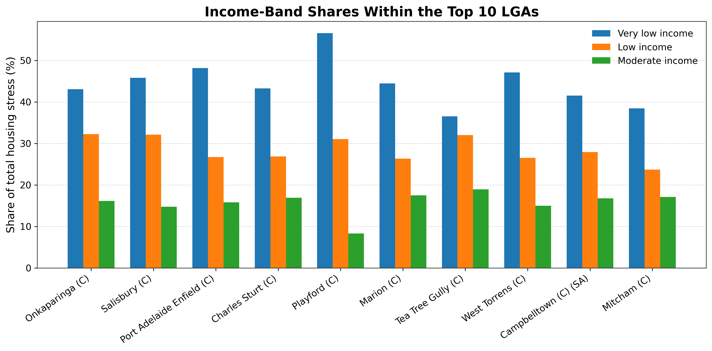
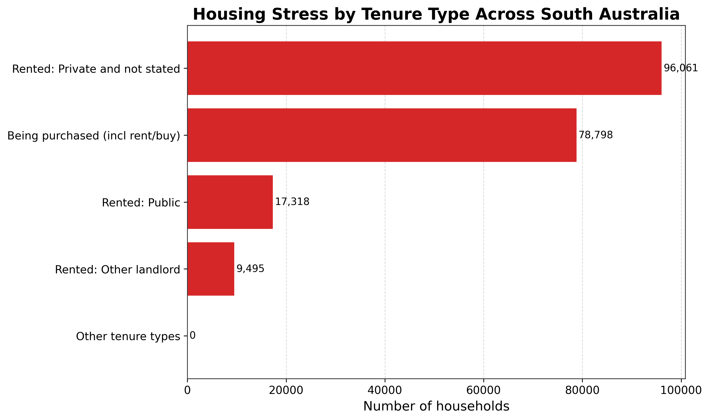
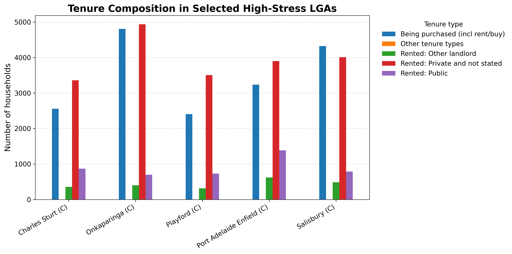
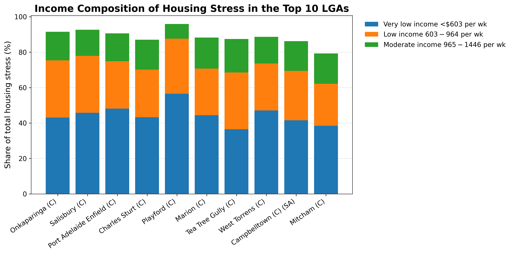

Local Government Area. This is the geographic unit used to compare areas across South Australia, similar to comparing local council areas rather than individual suburbs.
Portfolio
Data Analysis & Machine Learning
Data analysis case study
South Australian Housing Stress Analysis
A figure-driven analysis of South Australian housing-stress data aimed at answering three practical questions: where the burden is concentrated, who is most affected, and how housing tenure changes the story. The project turns a public dataset into a clear, decision-friendly narrative rather than a pile of disconnected charts.
Python-based analysis
Data cleaning
Comparative visualisation
Concentration analysis
Insight writing
Portfolio presentation
Definitions & context
Plain-English interpretation of the dataset terms
These clarifications make the project readable for people outside housing policy, which matters on a portfolio site.
A widely used affordability benchmark where a household is considered under housing-cost pressure when housing costs exceed 30% of household income. In this project, the dataset counts households classified under that rule.
The housing arrangement: for example renting privately, renting publicly, or purchasing a home. It helps show whether affordability pressure is concentrated among renters, buyers, or both.
Public rental refers to government or community housing arrangements. It is not the same as standard private rental through the market.
When a figure shows South Australia as a whole, it is presenting the statewide aggregate rather than one single LGA.
Some LGA names include an administrative prefix such as City (C), District Council (DC), or Regional Council (RC). Those labels describe the council type, not a different kind of metric.
What the analysis found
Cross-figure findings
These are the recurring patterns that appear when the seven figures are read together rather than as isolated charts.
Project overview
This project analyses South Australian housing-stress data to identify where affordability pressure is concentrated, which income groups dominate the burden, and how tenure type changes the pattern. The work is less about showing charts for their own sake and more about turning a public dataset into a clear geographic and socioeconomic story.
That makes it a good portfolio example of structured analysis, careful definition of terms, and figure-led communication aimed at a non-specialist audience.
Questions addressed
Where is housing stress concentrated across South Australia?
Which income groups dominate the burden in the highest-stress LGAs?
Is affordability pressure mainly a rental issue, or also a purchasing issue?
Which LGAs combine large burden with deeper income vulnerability?
All seven figures
Figure-by-figure analysis
Each figure is documented with a plain-language explanation, the main analytical observations, and a concise key insight that captures why the chart matters.

Waiting for the real chart image
fig01_top15_lgas_clean.png
Place this PNG inside assets/images/projects/housing-stress/ and it will appear automatically.
Figure 01
Top 15 LGAs by Households in 30% Housing Stress (2018)
This ranks the LGAs with the largest number of households in 30% housing stress.
Main insights
Onkaparinga has the highest total housing-stress burden in the dataset, followed by Salisbury and Port Adelaide Enfield. The highest-burden LGAs are mostly in metropolitan Adelaide rather than regional South Australia, and there is a noticeable drop after the top few LGAs, suggesting that the burden is concentrated rather than evenly spread.
Key insight
Top housing-stress burden is concentrated in a small number of metro LGAs. Onkaparinga recorded the highest number of households in 30% housing stress, followed by Salisbury and Port Adelaide Enfield, indicating that the burden is concentrated in metropolitan Adelaide rather than being evenly distributed across South Australia.

Waiting for the real chart image
fig02_income_share_top10_clean.png
Use the exact filename so the card updates automatically without any further HTML edits.
Figure 02
Income-Band Shares Within the Top 10 LGAs
This compares the percentage share of housing stress made up by very low-income, low-income, and moderate-income households within each of the top 10 LGAs.
Main insights
In every top 10 LGA, the very low-income group is the largest contributor. Playford stands out most strongly, with the highest concentration of very-low-income households, while Tea Tree Gully and Mitcham show a more balanced distribution, meaning housing stress extends further into low- and moderate-income groups. The pattern shows that the problem is most severe for the poorest households, but it is not limited to them.
Key insight
Very low-income households are the most affected group across all top LGAs. In every high-burden LGA, the largest share of housing stress comes from very low-income households, with Playford as the most concentrated case and Tea Tree Gully and Mitcham showing a broader spread across income bands.

Waiting for the real chart image
fig03_tenure_totals_clean.png
This figure clarifies that affordability pressure is not exclusively a rental issue.
Figure 03
Housing Stress by Tenure Type Across South Australia
This compares total housing stress across the major tenure types statewide.
Main insights
Private renting is the largest tenure category associated with housing stress. Purchasing households also make up a very large share, showing that housing stress is not just a renter issue. Public rental stress exists but is much smaller in absolute numbers than private rental stress, while other landlord categories are relatively minor contributors.
Key insight
Private rental housing is the largest tenure pathway into housing stress statewide. Across South Australia, households renting privately account for the largest housing-stress burden, but households purchasing their homes also represent a substantial share, showing that affordability pressure extends beyond renters alone.

Waiting for the real chart image
fig04_selected_lga_tenure_clean.png
The local differences matter here, especially around public rental and the balance between renting and purchasing.
Figure 04
Tenure Composition in Selected High-Stress LGAs
This compares tenure patterns across selected high-burden LGAs: Charles Sturt, Onkaparinga, Playford, Port Adelaide Enfield, and Salisbury.
Main insights
In all selected LGAs, the two dominant tenure groups are private rental and being purchased. Onkaparinga has especially high counts in both private rental and purchasing stress, while Port Adelaide Enfield has a relatively stronger public-rental component than most of the others. The tenure mix is similar across these LGAs, but the balance between renting and purchasing still differs from place to place.
Key insight
High-stress LGAs share a similar tenure pattern, but with meaningful local differences. Across the selected LGAs, private rental and purchasing households make up most of the burden, with Onkaparinga high in both categories and Port Adelaide Enfield showing a comparatively larger public-rental contribution.

Waiting for the real chart image
fig05_cumulative_share_lgas.png
This figure is one of the strongest pieces of evidence on the page because it quantifies concentration directly.
Figure 05
Cumulative Share of Housing Stress by Ranked LGA
This is a concentration curve showing how much of the total statewide housing stress is captured as more LGAs are added from highest to lowest burden.
Main insights
The top 10 LGAs account for 63.9% of total housing stress. The curve rises quickly at the beginning, which means a relatively small number of LGAs carry a large share of the statewide burden. This is strong evidence that housing stress is geographically concentrated.
Key insight
Housing stress is highly concentrated geographically. The top 10 LGAs account for 63.9% of total housing stress in the dataset, and the steep early rise in the cumulative curve shows that a relatively small number of LGAs carry most of the statewide burden.

Waiting for the real chart image
fig06_vulnerability_scatter.png
This figure helps distinguish sheer scale from deeper vulnerability.
Figure 06
Housing Stress Burden vs Very-Low-Income Concentration
This scatter plot compares total housing-stress burden on the x-axis with the share of very-low-income households on the y-axis.
Main insights
Playford is the standout vulnerability case: its total burden is not the highest, but its very-low-income concentration is the strongest. Onkaparinga has the largest total burden, but its income mix is less extreme than Playford’s. Port Adelaide Enfield and Salisbury combine both high total burden and high very-low-income concentration, while Tea Tree Gully and Mitcham sit lower on the vulnerability axis and show a more mixed-income stress profile.
Key insight
Playford stands out as the most income-vulnerable high-stress LGA. Although Onkaparinga has the largest overall burden, Playford has the highest concentration of very-low-income households among the top LGAs, while Port Adelaide Enfield and Salisbury also combine high burden with strong low-income concentration.

Waiting for the real chart image
fig07_income_composition_stacked.png
This figure is a strong complement to the grouped income-share chart because it makes composition easier to scan.
Figure 07
Income Composition of Housing Stress in the Top 10 LGAs
This is a stacked view of the income mix within each top LGA.
Main insights
The very low-income component is visually dominant in every LGA. Playford has the strongest visual dominance of the very-low-income segment, while Tea Tree Gully, Campbelltown, and Mitcham show a more even spread across income groups. This figure complements the grouped income-share figure by making the composition easier to compare as a whole.
Key insight
The income composition of housing stress is dominated by very low-income households. Across the top 10 LGAs, the very-low-income segment forms the largest part of housing stress, with Playford showing the most concentrated low-income profile and Tea Tree Gully, Campbelltown, and Mitcham appearing more balanced.
Methods and analytical framing
The project uses a public housing-stress dataset and organises the analysis into four complementary lenses: ranking, composition, concentration, and vulnerability. That combination creates a more rounded story than any single chart alone.
- Ranking LGAs by total housing-stress burden
- Comparing income composition within the highest-burden LGAs
- Aggregating tenure categories at both statewide and selected-LGA levels
- Using a cumulative-share curve to quantify geographic concentration
- Using a burden-vs-vulnerability comparison to distinguish scale from deeper exposure
Documentation note
The page intentionally defines terms such as LGA, public rental, and 30% housing stress because strong analytical work is not only about producing results — it is also about making the work readable to the next person.